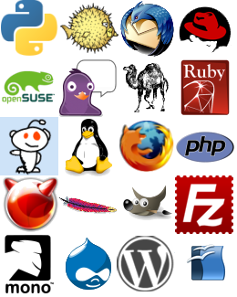

Einleitung
Installieren Sie eine Linux-Distribution, so enthält diese immer vorab
installierte Anwendungen. Diese Vorauswahl wurde von den jeweiligen
Entwicklern der Distribution getroffen. Aber nicht jeder ist mit
dieser Auswahl zufrieden.
Linux ist in dieser Hinsicht sehr flexibel, d.h. der Benutzer kann
sich an einem großen Pool von Anwendungen bedienen und so das
Linuxsystem nach seinen Wünschen anpassen.
Dieses WebQuest wird Ihnen die wichtigsten, freien Anwendungen aus den
Bereichen Desktop, Server und Entwicklungssprachen näher bringen.